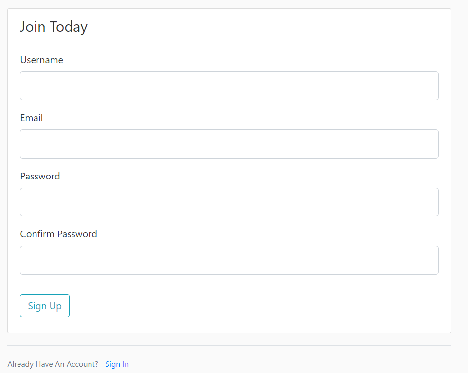

Flask Blog
Technologies, Python / Flask / Bootstrap / CSS / HTML / JavaScript / SQL / Docker
About, Fully functional blog written in Flask. It has support for basic account management, supports posting/editing/deleting blogs with pagination. This was developed when I initially started learning Flask. You can view the source code at github.
Working demo here


HDR Multi Tool
Technologies, Electron / JavaScript / Node / HTML / CSS
About,
A graphical user interface for parsing HDR10+ and Dolby Vision.
Originally this program was coded in Python/Tkinter, I re-wrote it
to increase my skills in JavaScript and to learn the Electron
framework.
Note: You can still see the tkinter code on
the repo

FFMPEG Audio Encoder
Technologies, Python / Tkinter
About, One of my oldest projects that I built to help introduce myself with Tkinter. It's a very powerful audio encoder that utilizes FFMPEG on the back end to handle processing of intermediate files. While this isn't one of my most recent projects it is used by many users today and very stable.


MP4 Mux Tool
Technologies, Python / Tkinter / QT
About, A front end to power GPAC's mp4box. This software makes it easy for the user to quickly manipulate mp4 file structures, to add in compressed audio, subtitles, etc. It's written in Tkinter, but I am in the process of re-writing it in QT in another branch (/MP4-Mux-Tool/tree/qt-re-work) as time allows.


Youtube DL GUI
Technologies, Python / Tkinter
About, This is one of my oldest projects that I used to help learn Tkinter. This is just a simple UI to wrap yt-dlp. It provides the basic functions from the back end program to download videos from various services such as YouTube.

DeeZy
Technologies, Python
About, Command line interface for Dolby Encoding Engine Wrapper. This is an advanced program to handle formatting intermediate audio to a format that DEE can utilize, while also handling converting the data to XML format as needed. This program is platform agnostic but does require the user to own a license for DEE.

FrameForge
Technologies, Python
About, A powerful CLI to create comparison images from a source and encoded video file. It utilizes VapourSynth in the backend with support for additional libraries as the user desires. The user can customize the subtitle size, color, visibility, the amount of images, hdr tone mapping, and quite a bit more.